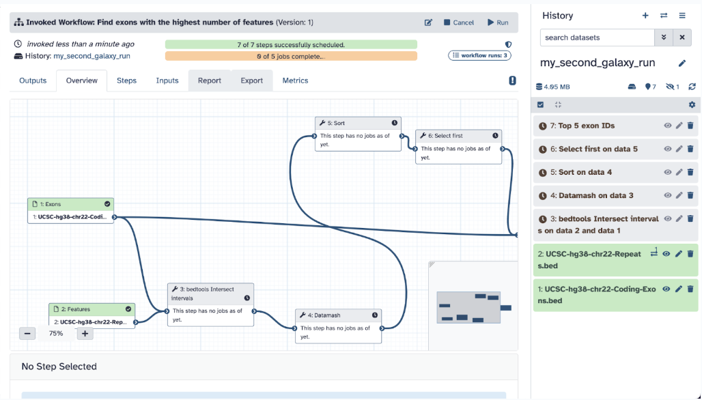

Session 34 – Galaxy: Workflows (Part II)
34.1 Introduction to Workflows
What are Galaxy Workflows?
Workflows are predefined sequences of software tools that automate repetitive tasks. Using them ensures reproducibility (ability to reproduce methods from a study), scalability (you can work with bulk data), and efficiency (you can work quickly and derive more analyses). Workflows enable users to share standardized pipelines with the research community to share and compare data.
We should use workflows in bioinformatics because it saves time and reduces method-related errors in large datasets. It also allows researchers to create standardized, reproducible bioinformatics pipelines to share with others and increase research dissemination. Lastly, workflows can be modified for different datasets without manual reconfiguration of debugging or other software adjustments.
Besides Galaxy Workflows, there are other software that are popularly used by bioinformaticians to run workflows, like Nextflow or Seqera.
Often times, bioinformatics will opt to develop their own workflows by using existing packages in NCBI tools or GitHub.
What are some examples of using workflows in Galaxy?
You can find any specific to your domain of interest. Here are some examples:
RNA-Seq Differential Expression Analysis (DGE) – See Galaxy Training here
Variant Calling Pipeline (VCP) – See Galaxy Training here
Quality Control and Trimming Automation – See Galaxy Training here
Metagenomic Taxonomic Classification – See Galaxy Training here
Functional Annotation of Genomes – See Galaxy Training here and Transcriptomes – See Galaxy Training here
34.3 Export Existing Workflows
Galaxy is great for making use of existing workflows for several reasons. These workflows have already been tested and validated by other researchers, meaning they are more likely to produce reliable results. Using them also reduces the amount of work required, as you don’t need to build a pipeline from scratch. Additionally, reusing established workflows promotes reproducibility, allowing you to follow and replicate the methods of other scientists.
The data and workflow idea taken for this part is from Galaxy Basics for a genomics Galaxy Tutorial written by Helena Rasche et al. 2016; see this tutorial on this link.
We will use an already prepared workflow developed and can be found here on this link; this webpage tells us about all the features of the workflow (like the pipeline map)
Input files, output files, and the tools used in this workflow are also found:
34.4 Hands-on: Activity 2A – Run Workflow
Step 1: Let’s use this workflow by selecting Run Workflow in Galaxy > Galaxy Main (you can also download it as a .ga file)
Step 2: Now, you should have the workflow in your Galaxy page ready for use
Step 3: The next step is to gather the needed files you will use in your workflow. A good strategy is to find a workflow with the data you already have or convert it into the format your workflow needs. In this case of our workflow, we need two input files, an exon file, and a features file in the proper file formats. Following the tutorial, we will use training data.
The objective of this workflow is to find exons (segments of a DNA or RNA molecule containing information coding for a protein or peptide sequence) with the most SNPs (single nucleotide polymorphisms, which are the most common type of genetic variation among people). So, we will essentially follow a workflow that will i) locate exons, ii) count the number of SNPs per exon, iii) sort the exons by SNP count, iv) recover exon information, and v) visualize data.
Step 4: Before you start any analysis, it is vital to organize yourself based on the Galaxys histories. So, go ahead and create a new Galaxy history named my_second_galaxy_run.
Keep in mind that you can switch between your histories by pressing the double arrows icon or do other options (like showing histories side by side) by pressing the hamburger icon.
Step 5: Going back to the workflow, you will see you need two files, an exon file and another feature file, which can be found on these links:
Exon file download
Feature file download
Download these files locally on your computer.
Step 6: Upload them to your my_second_galaxy_run history by using the Choose local file selection.
Another way you can do this is by selecting Paste/Fetch data and typing in this:
https://zenodo.org/record/4104428/files/UCSC-hg38-chr22-Coding-Exons.bed
https://zenodo.org/record/4104428/files/UCSC-hg38-chr22-Repeats.bedBoth options should get you to this stage of downloading the files:
Step 7: Once green, ensure that the database attribute of your files is in the database Human Dec. 2013 (GRCh38/hg38) (hg38) this will help with visualization later.
Step 8: Go ahead and input the Exons file into the Exon input section and the Repeats into the Features input section and hit Run.
Step 9: Your workflow should be successfully running, and each step is running; now we wait and monitor! Your workflow should complete successfully as you see all green on your page (this may take 5-10 minutes, depending on your internet speed).

When done, you will see the following screen:
34.5 Hands-on: Activity 2B – Output Files
Now, let’s investigate the files!
Step 10: Analysis of Output files
The first file, bedtools Intersect intervals on data 2 and data 1 shows column 4 contains exon IDs and column 10 lists SNP IDs.
The second output file, Datamash shows the number of SNPs per exon.
The third output, Sort shows the sorting of the exons by SNPs count.
The fourth output, Select selects the top 5 exons with the most SNPs.
The fifth and final output, Top 5 Exon ID recovers the exon information of the top 5 exons.
Now, you have your final results, and you can visualize your genome by pressing the visualization icon in the data history.
34.6 Hands-on: Activity 2C – Visualize Genomic Data
Now lets use another software to run some downstream analyses
Step 11: Downstream analysis. Go ahead and save that file with the save icon and lets visualize our genomic data!
Step 12: Go to the UCSC Genome Browser linked here to visualize your data.
Step 13: When there, select My Data > Custom Tracks. Select Add Custom tracks.
Step 14: Select the Galaxy7-[Top 5 exon IDs].bed file and click submit.
Step 15: Your data should have successfully been uploaded, and you can now visualize it by clicking Go to the first annotation.
What you see in your data now is the following:
Your exons (black bars) overlap with TMEM121B on chr 22
SNPs (colored lines) and regulatory elements (orange/red bars) indicate possible functional sites
Gene expression (yellow peaks) shows transcription activity
Conservation (blue peaks, black blocks) suggests evolutionary importance
Step 16: Go ahead and go back to Galaxy
You can also visualize your data in a few different ways by pressing the visualization section
Like a horizontal bar chart, for example:
Feel free to explore those options in the visualization section.
Good job, you finished a premade public workflow!
34.7 Build a Workflow
As we repeatedly stressed, workflows are the most helpful tool in Galaxy due to their ease of use for complex analyses, reproducibility, and accessibility. You have already built a workflow from scratch (Session 33.4) and used a premade workflow (Session 34.2), so now, let’s explore a widespread case. A typical case of using Galaxy workflows is developing a workflow as you go; you can do this by making a workflow directly from your history. Say you are attempting to solve a genomic question of mapping some reads to a reference genome Mapping and running alignments are common issues bioinformaticians encounter due to the nature of sequencing, which produces lots of sequences with no context or connections to external data. If we map (and align) unknown reads specifically to a particular area of a known genome, we will thereby gain knowledge of our unknown genetic data.
These data and workflow idea taken from Mapping Galaxy Tutorial written by Helena Rasche et al. 2016; see the link for more details.
34.8 Hands-on: Activity 3A – Genomic Analysis Workflow
Let’s develop this workflow by following these steps:
Step 1: Make a new Galaxy history named my_third_galaxy_history
Step 2: Upload two fastq.gz files to Galaxy, which can be found here:
Read 1 file download
Read 2 file download
Step 3: Before running any genomic analysis, it is vital to make sure our data is good quality; let’s process these two files through the Galaxy FASTQC tool. These files are pair reads, so ensure that you select both reads by clicking multiple datasets and selecting both reads.
Step 4: Check your FASTQC results to ensure you can proceed; your file should be suitable to go
Step 5: Let’s use a popular aligner tool called Bowtie2. We choose this software because it is a very fast aligning tool that will map our sequencing reads to a given reference. To run our alignment, we will use the following parameters:
Ensure your data is set to pair-ended and you select reads 1 and reads 2, respectively
Ensure that you select a built-in genome and select reference genome Mouse (Mus musculus): mm10
Add mapping statistics using Bowtie2
Click run on Bowtie2
Step 6: Let’s analyze our Bowtie2 files
The first file is a bam file, which is the aligned file that we can use for future analysis.
The second file is a txt mapping stats file, which will tell us the percentage of the aligning.
34.9 Hands-on: Activity 3B – Visualize BAM file
Lets go back to downstream analyses!
Step 7: Let’s visualize our bam file by pressing the Visualize icon in the history. Go ahead and select to visualize it at UCSC Genome Browser linked here.
Now you can see your visualized aligned reads compared to the reference genome in the UCSC genome browser. You can also alternate various sections to make specific selections to better your visualization. Here, you can see your Bowtie2 alignments in the Bowtie2 on data 2 and data 1: alignments track.
34.10 Hands-on: Activity 3C – Replicate
We have some reasonably good data… Say, I have be happy to replicate this with other data in the future. Why do not I create a workflow? Let’s do exactly that!
Step 8: Go back to your Galaxy history and hover over the History options. Select Extract Workflow, which will convert your History to Workflow… how convenient!
Step 9: Clean up the tools, change the name of your workflow to my_second_workflow and create a workflow.
Step 10: Let’s test if this workflow works! Click Run Workflow. Check all the steps and parameters, which should be the same as before. Click Run Workflow again!
Step 11: Analyze the results of the workflow. Your workflow should have been entirely successful, and if you examine the files, they should be the same as what you did already.
Good job, you finished developing your own workflow!
34.11 Citing and Sharing Workflows
Communication in science is key: whether you are using someone’s workflow or developed a successful one of your own, it is vital that you communicate it.
Many published workflows in Galaxy are widely used in bioinformatics research to enhance current and future research. If you are using a publicly available workflow, it is essential to cite the original authors in your research or reports properly.
34.12 Importing Workflows
How to import a public workflow:
Say, I want a transcriptomics work-flow that is specific for single-read data
Like so:
You can download the workflow in .ga format and use it as an imported workflow. What we want is to be able to run the workflow, and to do that, we must first import it to our Galaxy. It will take a moment and then give a green message in another tab saying it was imported successfully
You can now start using this workflow as it will join the panel of My Workflows
34.13 Citing Workflows
How to cite a workflow:
If you use a workflow for your data, you must give credit to the owners and developers of the workflow. Visit this link to see exactly how to cite parts of Galaxy.
Refer to this table for understanding what and how to cite:
To cite a specific workflow, address the About This Workflow panel on your desired workflow. Attributing the authors of the workflow is vital for reproducibility and scientific ethics
Why should you cite workflows?
To give credit to the original authors who developed and validated the workflow. This maintains scientific integrity by acknowledging contributions and avoiding plagiarism. It also provides context for your research, helping others understand the foundation of your analysis.
If you developed a workflow on your own, you can share it publicly or with specific collaborators
34.14 Exporting Workflows
How to export your workflow:
You can download it as a .ga file. Now, a .ga file, in the context of Galaxy workflows, is used to store and share a workflow, and you can import this file into Galaxy to use the workflow
Then import your workflow:
You can import a .ga file that you received from someone or your own via file format or a URL
34.16 Pros and Cons of Galaxy
Nothing is perfect, especially in science and especially in the computational realm.
Even though it is clear that Galaxy is a powerful and user-friendly platform for bioinformatics analysis, it has its strengths and weaknesses. For example, even though it is a pro that Galaxy does not require coding, specific parameters might not be as adjustable, or error messages might not be as clear as they would be in a command-line setting.
Let’s explore the table below and let’s have a discussion of what Galaxy features may be its pros or cons:
Congratulations, you finished the second session of Galaxy Learning! You have now learned the importance of various Galaxy features and designed your project.